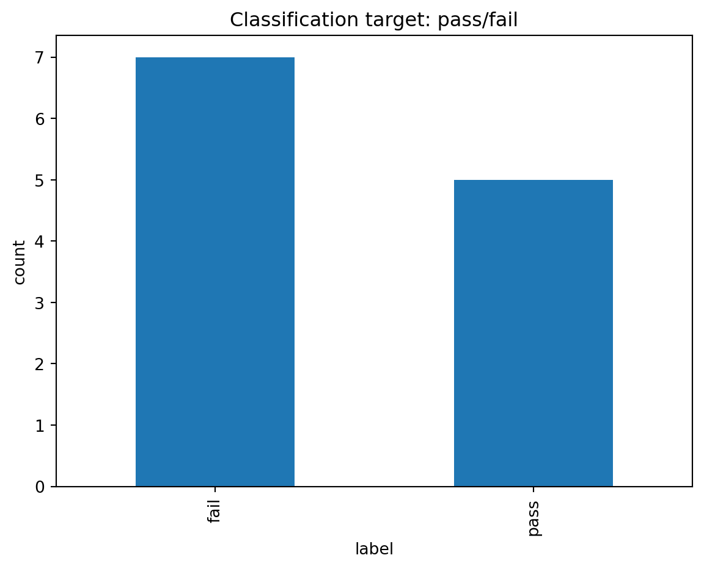

This page builds a tiny student-performance dataset to demonstrate the core ideas Chapter 2 introduces.
Build a Tiny Dataset
This cell creates a tiny, fake dataset so we can focus on the idea of inputs (features) and outputs (targets) without needing a real file yet. By the end of the cell, we’ll have a table (df) where each row represents one student.
NumPy (np): used here for generating random numbers and doing simple numeric operations.
pandas (pd): used to create and display a table called a DataFrame (think: spreadsheet in Python).
Making the randomness repeatable
Next, the cell creates a random number generator:
rng is a “random number generator” object we’ll use to create fake attendance and scores.
The 0 is a seed, which makes the results repeatable. That means if you run the notebook again, you’ll get the same random dataset each time (useful for teaching and debugging).
Choosing how many students to generate
n = 12 means we’re generating 12 rows, so our dataset will represent 12 students.
If we changed n to 100, we’d generate 100 students instead.
Building the DataFrame (our dataset table)
The DataFrame is created with four columns that represent student features (inputs):
attendance
homework_rate
quiz_avg
exam_avg
Each column is filled with random whole numbers in a chosen range. Those ranges are just meant to look realistic (for example, attendance between about 60 and 100).
So at this point:
each row = one student
each column = one measured input about that student
Creating a numeric target for regression
Next the cell creates a new column: and * final_score is calculated as a weighted combination of homework, quizzes, and exams. * This is meant to imitate how a course grade might be computed (exams count more than quizzes, etc.). * This column is a number, so it can be used as a regression target (predict a numeric value).
Creating a label target for classification
Then the cell creates another new column:
pass_fail turns the numeric final_score into a category label: "pass" or "fail".
This column is a classification target, because the output must be one of a fixed set of options.
Displaying the result
The last line tells Jupyter/Quarto to display df, so you can see the dataset you just created as a table.
In supervised learning, we organize our data in a table:
Each row is one example (here, one student).
The columns split into:
X (features): the input information we use to make a prediction
(attendance, homework_rate, quiz_avg, exam_avg)
y (target/label): the output we want to predict
In our demo, we keeping X the same, and we show two choices for y:
pass_fail is a classification target (the model chooses a label from {pass, fail})
final_score is a regression target (the model predicts a numeric value)
Review the Difference in Targets
This section zooms in on the target column for classification: pass_fail. The goal is to make the idea of a classification target visible: it isn’t a wide range of numbers — it’s a small set of labels.
Classification target (labels)
Counting how many of each label we have
This first line counts how many students fall into each class:
df["pass_fail"] selects the pass_fail column from the DataFrame.
.value_counts() counts how many times each label appears.
The output should look like a small summary table showing something like:
how many students are "pass"
how many students are "fail"
This is useful because classification targets often come in classes, and it helps to know whether your dataset has a reasonable spread of those classes (for example, not all pass and none fail).
df["pass_fail"].value_counts()
pass_fail
fail 7
pass 5
Name: count, dtype: int64
Making the label counts visual with a bar chart
The next cell turns those same counts into a picture.
import matplotlib.pyplot as plt loads the plotting library we’ll use to draw the chart.
df["pass_fail"].value_counts().plot(kind="bar") does two steps at once:
it recomputes the counts of "pass" vs "fail"
it plots them as a bar chart
plt.title(...) adds a title so the chart clearly communicates what it represents.
plt.xlabel("label") labels the horizontal axis: the category names (pass and fail).
plt.ylabel("count") labels the vertical axis: how many students are in each category.
plt.show() displays the plot.
The key takeaway from this plot: a classification target is made up of labels from a fixed set of options, and we can summarize it by counting how many examples fall into each label.
import matplotlib.pyplot as pltdf["pass_fail"].value_counts().plot(kind="bar")plt.title("Classification target: pass/fail")plt.xlabel("label")plt.ylabel("count")plt.show()

Now that we’ve looked at the classification target as label counts, we’ll look at the regression target as numeric values.
Regression target (numeric)
This next cell looks at the regression target column: final_score. The goal is to show that regression targets are numeric values, so we summarize them using numeric statistics and distributions.
A quick numeric summary (describe)
The first line:
selects the final_score column
produces a standard summary of numeric data
The output includes common summary statistics like:
how many values there are (count)
the average (mean)
spread (std)
minimum and maximum (min, max)
and percentile cutoffs (like 25%, 50%, 75%)
df["final_score"].describe()
count 12.000000
mean 65.916667
std 10.672465
min 46.000000
25% 60.250000
50% 64.000000
75% 73.250000
max 86.000000
Name: final_score, dtype: float64
A histogram to show the distribution of scores
The next cell visualizes the same column as a histogram.
The histogram groups numeric values into bins (ranges) and counts how many students fall into each range.
bins=8 controls how many ranges the score axis is divided into. More bins means narrower ranges; fewer bins means wider ranges.
Then the plot labels make it readable:
the title explains what you’re looking at
the x-axis label (“score”) tells you the values are numeric
the y-axis label (“count”) tells you we’re counting how many students fall into each score range
df["final_score"].plot(kind="hist", bins=8)plt.title("Regression target: final score")plt.xlabel("score")plt.ylabel("count")plt.show()
Generalization: Train vs Test Split
This section sets up the train/test split so we can check whether a model would work on new students, not just the students in our dataset. We do that by holding back some rows as a test set and using the rest as a training set. By the end of this section, you’ll have X_train, X_test, y_train, and y_test—two groups of students that let us measure generalization later.
Step 1: Choose X (features) and y (target)
from sklearn.model_selection import train_test_split# X = input features (what we use to predict)X = df[["attendance", "homework_rate", "quiz_avg", "exam_avg"]]# y = target (what we want to predict)y = df["pass_fail"]
Importing the split tool
from sklearn.model_selection import train_test_split imports a helper function from scikit-learn.
We’ll use it to split our rows into a training set and a test set in a consistent way.
Defining X (features)
X = df[[...]] selects the feature columns from the DataFrame.
We are choosing the same four inputs we’ve been using throughout the demo:
attendance
homework_rate
quiz_avg
exam_avg
This creates a new table X that contains only the input information.
Defining y (target)
y = df["pass_fail"] selects the target column we want to predict.
Here we are choosing classification as our task, so y is the label column (pass or fail).
At this point, we have separated the dataset into:
X: what we use to predict
y: what we want to predict
Step 2: Split the rows into training and test sets
train_test_split(X, y, ...) splits the dataset into two groups of rows.
We split X and y at the same time so that each feature row stays matched with its correct label.
This gives us four outputs:
X_train: the feature rows in the training set
X_test: the feature rows in the test set
y_train: the labels that go with the training rows
y_test: the labels that go with the test rows
Choosing how large the test set is
test_size=0.25 means 25% of the rows go into the test set.
With 12 total students, this will usually mean about 3 students in the test set and 9 in training.
Making the split repeatable
random_state=0 makes the split repeatable.
Without it, the split could change each time you run the notebook, which makes it harder to compare results.
Printing the sizes
The print(...) lines show how many rows ended up in each group so you can confirm the split happened.
kNN
Now that we have a training set and a test set, we can train a model on the training students and see how well it generalizes to the test students.
We’ll use k-nearest neighbors (kNN) for classification. kNN predicts the label for a new student by finding the k closest students in the training set and using a majority vote. Changing k changes how flexible the model is.
Step 1: Train one kNN model and check train vs test performance
KNeighborsClassifier(...) creates a kNN classifier.
n_neighbors=3 sets k = 3, meaning the model looks at the 3 nearest training students when it predicts a label.
knn.fit(X_train, y_train) trains the model using the training set.
For kNN, “training” mostly means storing the training data so the model can look up neighbors later.
knn.score(...) reports accuracy: the fraction of predictions that match the true labels.
The training accuracy is how well it predicts the training students.
The test accuracy is how well it predicts the held-back test students.
This is our first concrete look at generalization: test accuracy is the estimate of how well this model works on new students.
Step 2: Watch what happens when we change k
from sklearn.neighbors import KNeighborsClassifiermax_k =len(X_train) # k can't be bigger than the number of training rowsks =range(1, max_k +1)train_scores = []test_scores = []for k in ks: knn = KNeighborsClassifier(n_neighbors=k) knn.fit(X_train, y_train) train_scores.append(knn.score(X_train, y_train)) test_scores.append(knn.score(X_test, y_test))results = pd.DataFrame({"k": list(ks),"train_acc": train_scores,"test_acc": test_scores})results.round(3)
k
train_acc
test_acc
0
1
1.000
1.000
1
2
1.000
0.667
2
3
1.000
1.000
3
4
1.000
0.667
4
5
1.000
1.000
5
6
0.667
0.333
6
7
0.667
0.333
7
8
0.667
0.333
8
9
0.667
0.333
Importing the model
from sklearn.neighbors import KNeighborsClassifier imports the kNN classification model from scikit-learn.
We import it inside this cell so the cell works even if it’s run on its own.
Choosing the k values we’re allowed to test
max_k = len(X_train) gets the number of rows in the training set.
For kNN, k cannot be larger than the number of training examples, because the model can’t look for “10 nearest neighbors” if you only have 9 training students.
ks = range(1, max_k + 1) creates the list of k values we’ll test. If max_k is 9, then this produces k values from 1 through 9.
Creating containers to store our results
train_scores = [] creates an empty list that will store training accuracy for each k.
test_scores = [] creates an empty list that will store test accuracy for each k.
These lists start empty, and we’ll fill them as we loop.
Looping over k values
for k in ks: starts a loop. That means we will run the indented code once for each k value.
Inside the loop:
knn = KNeighborsClassifier(n_neighbors=k) creates a new kNN model using the current k value.
knn.fit(X_train, y_train) trains the model on the training set. For kNN, this mainly means the model stores the training data so it can compare new points to it later.
train_scores.append(knn.score(X_train, y_train)) calculates accuracy on the training set and adds it to the train_scores list.
test_scores.append(knn.score(X_test, y_test)) calculates accuracy on the test set and adds it to the test_scores list.
So after the loop finishes:
train_scores[i] is the training accuracy for k = ks[i]
test_scores[i] is the test accuracy for k = ks[i]
Displaying the results
We build a small table called results with three columns: k, train_acc, and test_acc.
pd.DataFrame({...}) creates the table by lining up each k value with its training accuracy and test accuracy.
results.round(3) rounds the accuracy values to three decimals so the table is easier to read.
The final line displays the table so we can quickly compare training vs test accuracy for each k before plotting.
At this stage, the important thing is not the exact numbers—it’s that we now have a way to compare training performance vs test performance as k changes.
Step 3: Plot train vs test accuracy as k changes
plt.plot(list(ks), train_scores, label="training accuracy")plt.plot(list(ks), test_scores, label="test accuracy")plt.xlabel("k (number of neighbors)")plt.ylabel("accuracy")plt.title("kNN: training vs test accuracy as k changes")plt.legend()plt.show()
Plotting the training accuracy line
plt.plot(list(ks), train_scores, label="training accuracy") draws a line graph of training accuracy.
list(ks) provides the x-values (the k values we tested).
train_scores provides the y-values (the training accuracy for each k).
label="training accuracy" gives this line a name so it can appear in the legend.
Plotting the test accuracy line
plt.plot(list(ks), test_scores, label="test accuracy") draws a second line on the same plot for test accuracy.
It uses the same x-values (k), but a different set of y-values (test_scores).
This lets us compare training and test performance at the same k values.
Labeling the axes
plt.xlabel("k (number of neighbors)") labels the horizontal axis so it’s clear what the x-values represent.
plt.ylabel("accuracy") labels the vertical axis so it’s clear we’re measuring accuracy (from 0 to 1).
Adding a title
plt.title("kNN: training vs test accuracy as k changes") adds a title that summarizes what the plot is showing.
Adding a legend
plt.legend() displays a legend box that matches each line to its label (“training accuracy” vs “test accuracy”).
Without this, you’d see two lines but wouldn’t know which is which.
Displaying the plot
plt.show() tells Python to render the chart.
This plot is valuable because it shows how changing k changes model behavior:
When k is small, the model can fit the training data very closely, so training accuracy is often high.
As k increases, the model becomes less flexible, so training accuracy usually drops.
The test accuracy is the estimate of generalization, and we watch how it changes as k changes.
Because our dataset is tiny, the test line may jump around, but the key idea still holds: k controls how complex the model is, and training vs test accuracy helps us see overfitting vs underfitting.